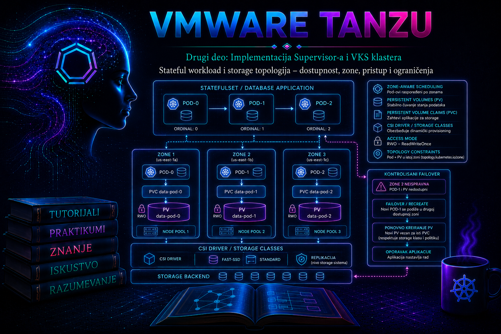

VMware & Tanzu

Prethodne dve lekcije objasnile su kako zahtev za trajnim prostorom prolazi od
PersistentVolumeClaim objekta, preko vSphere CSI sloja, do CNS volumena i kako
StorageClass predstavlja deklarativni izbor vSphere Storage Policy-ja. Ova lekcija
dodaje presudnu produkcionu dimenziju: gde Pod može da se izvršava, odakle
njegov volumen može da se priključi i šta se događa kada čvor, datastore, vSphere klaster ili
čitava zona postanu nedostupni. Stateful workload nije visoko dostupan samo zato što ima više
replika, niti je podatak zaštićen samo zato što se nalazi na pouzdanom datastore-u.
U ovoj lekciji naziv VKS označava vSphere Kubernetes Service klaster. U dokumentaciji starijih izdanja isti sloj može biti nazvan Tanzu Kubernetes Grid Service ili TKG Service. Nazivi objekata, ponuđene StorageClass klase i detalji zonalne implementacije zavise od verzije vSphere/VCF platforme, izdanja VKS klastera, CSI drajvera, tipa datastore-a i dodeljenih politika. Zato se primeri ne primenjuju naslepo: stvarne nazive klasa, topology ključeve i podržane mogućnosti administrator najpre očitava iz sopstvenog klastera i proverava u matrici interoperabilnosti za konkretno izdanje.
1. Šta stateful workload čini drugačijim
Stateless aplikacija može da izgubi Pod i dobije novu instancu na drugom čvoru bez prenosa lokalnog
stanja. Stateful aplikacija vezuje identitet procesa za trajne podatke, redosled pokretanja, članstvo
u klasteru, mrežni identitet ili quorum. Kubernetes StatefulSet obezbeđuje stabilan ordinalni
identitet Pod-ova, stabilno imenovanje i po pravilu poseban PVC za svaku repliku preko
volumeClaimTemplates. On, međutim, ne pretvara samostalno bazu u distribuiranu bazu, ne
replicira sadržaj između PVC-ova i ne garantuje oporavak od gubitka zone.
| Sloj | Šta obezbeđuje | Šta ne obezbeđuje sam |
|---|---|---|
| StatefulSet | Stabilan identitet replike, uređeno kreiranje/gašenje i PVC po replici | Replikaciju podataka, backup, quorum i aplikacionu konzistentnost |
| Kubernetes scheduler | Izbor prihvatljivog čvora prema resursima, pravilima raspoređivanja i topology ograničenjima volumena | Promenu fizičke dostupnosti datastore-a ili automatsku migraciju podataka u drugu zonu |
| vSphere CSI/CNS | Provisioning, attach/mount tok, topology informacije i lifecycle volumena | Aplikacionu semantiku, logičku replikaciju baze i strategiju oporavka |
| vSphere Storage Policy i datastore | Postavljanje i karakteristike fizičkog skladištenja, prema mogućnostima platforme | Kubernetes replike, Pod anti-affinity i ispravnu raspodelu članova aplikacije |
| Aplikacija/operator | Quorum, sinhronu ili asinhronu replikaciju, failover i konzistentnost | Infrastrukturnu dostupnost bez pravilno projektovanog compute i storage sloja |
| Backup i restore | Oporavak od brisanja, korupcije, ransomware-a i katastrofe, u okviru dokazanih RPO/RTO ciljeva | Neprekidan rad tokom svakog kvara |
Administratorska odluka zato mora da poveže najmanje četiri ravni: topologiju compute resursa, topologiju storage pristupa, mehanizam aplikacione replikacije i plan zaštite podataka. Ako je bilo koja od njih zasnovana na pogrešnoj pretpostavci, „tri replike” mogu fizički završiti u istom domenu kvara ili ostati bez volumena kada se Pod premesti.
2. Tri značenja dostupnosti
U produkcionom dizajnu treba eksplicitno razlikovati dostupnost workload-a, dostupnost volumena i zaštitu sadržaja. Prva govori da li aplikacioni proces može da se pokrene; druga da li odgovarajući čvor može da pristupi tačno određenom volumenu; treća da li se ispravna verzija podataka može vratiti posle logičkog ili fizičkog gubitka. Visoko dostupan datastore može smanjiti rizik od hardverskog kvara, ali nije zamena za backup. Backup, zauzvrat, ne garantuje nizak RTO ako klaster nema mesto na kojem može ponovo da pokrene workload.
- HA procesa: kontroler može da rekreira Pod, ali samo ako postoji prihvatljiv čvor.
- HA podataka: volumen ili aplikaciona replika ostaju dostupni uprkos definisanom kvaru.
- DR: workload i podaci mogu da se obnove u drugom failure domain-u uz merljiv RPO i RTO.
- Integritet: aplikacija potvrđuje da su podaci konzistentni, a ne samo da je filesystem montiran.
3. Failure domain, region i zona: nazivi nisu dovoljni
Failure domain je skup komponenti koje mogu istovremeno otkazati zbog zajedničkog uzroka:
napajanja, mreže, rack-a, vSphere klastera, storage fabric-a, datastore-a ili lokacije. Kubernetes
standardno koristi labele topology.kubernetes.io/region i
topology.kubernetes.io/zone, dok CSI drajver može oglašavati i sopstvene topology ključeve.
Vrednost „zone-a” ima operativni smisao samo kada zaista odgovara izolovanom failure domain-u i kada
je mapiranje dosledno od vSphere infrastrukture do Kubernetes Node objekta.
Kod three-zone Supervisor implementacije vSphere zona se mapira na vSphere klaster, a zonalni datastore je dostupan hostovima unutar odgovarajuće zone. Zonalna Storage Policy mora biti topology-aware. Shared storage koji je vidljiv iz više zona ima drugačije osobine i rizike od zonalnog storage-a. vSAN stretched cluster nije isto što i three-zone Supervisor: stretched cluster tipično pruža jedan compute/storage domen rastegnut preko lokacija sa sopstvenim pravilima witness-a i dostupnosti, dok three-zone model eksplicitno raspoređuje Supervisor i workload resurse kroz tri vSphere zone. Te arhitekture se ne smeju poistovetiti u runbook-u niti u proceni kvara.
| Pojam | Dokaz koji administrator traži | Tipična pogrešna pretpostavka |
|---|---|---|
| Kubernetes zona | Node labele i CSI topology ključevi | Da naziv labele automatski dokazuje fizičku izolaciju |
| vSphere zona | Mapiranje zone na vSphere klaster, hostove, mrežu i storage | Da je svaki klaster automatski nezavisan failure domain |
| Zonalni datastore | Host connectivity i policy compliance unutar konkretne zone | Da mu čvor iz druge zone može pristupiti |
| Shared datastore | Dokazana vidljivost iz svih potrebnih zona i nezavisnost putanja | Da zajednička vidljivost znači i uklanjanje svih zajedničkih tačaka kvara |
| Aplikaciona zona | Raspored članova, quorum pravila i mesto svake replike podataka | Da Pod anti-affinity automatski znači i storage anti-affinity |
4. Kako scheduler i CSI usklađuju Pod i volumen
Kod topology-aware dinamičkog provisioninga scheduler ne posmatra samo slobodan CPU i memoriju. On
mora da pronađe čvor koji ispunjava node affinity, taints/tolerations, Pod affinity/anti-affinity i
topology uslove storage-a. CSI provisioner zatim dobija topology zahtev i bira kompatibilan datastore.
Kreirani PV dobija ograničenje dostupnosti, najčešće izraženo kroz spec.nodeAffinity. Pod
koji koristi taj PV može biti zakazan samo na čvor čija se topology labela poklapa sa tim ograničenjem.
- Korisnik kreira Pod/StatefulSet i PVC koji zahteva određenu StorageClass.
- Scheduler procenjuje compute uslove i, kod odloženog vezivanja, bira odgovarajući topology segment.
- CSI provisioner zahteva kreiranje volumena na datastore-u kompatibilnom sa politikom i segmentom.
- PV i PVC se vezuju; PV beleži CSI identitet volumena i, kada je primenljivo, node affinity.
- Kada Pod stigne na čvor, CSI attach tok priključuje block volumen VM-u, a node komponenta ga formatira/montira.
- Pri rescheduling-u isti volumen može pratiti Pod samo do čvora koji ima podržanu storage dostupnost i zadovoljava topology uslov.
volumeBindingMode: WaitForFirstConsumer odlaže binding/provisioning dok ne postoji Pod
potrošač. Tako izbor lokacije volumena može da uzme u obzir zahteve Pod-a. Nasuprot tome,
Immediate može kreirati volumen pre nego što scheduler zna gde Pod može da radi, što u
topology-constrained okruženju može proizvesti trajno Pending stanje. Ako platforma
generiše StorageClass klase, administrator ih ne menja niti rekreira bez zvanično podržane procedure;
najpre očitava njihovu stvarnu definiciju.
# Read-only; izvršava se sa nalogom koji može da čita storage i node objekte.
kubectl get storageclass
kubectl get storageclass <STORAGE_CLASS> -o yaml
kubectl get nodes -L topology.kubernetes.io/region,topology.kubernetes.io/zone
kubectl get csidrivers
kubectl get csinodes -o yaml
U izlazu se proveravaju provisioner, volumeBindingMode,
allowedTopologies, reclaimPolicy i mogućnost proširenja. Na Node i CSINode
objektima proveravaju se stvarni topology ključevi. Naziv provisioner-a i način izlaganja
StorageClass klase razlikuju se između Supervisor-a, VKS klastera i samostalno instaliranog vSphere
CSI drajvera; primer iz tuđeg klastera nije dokaz za lokalno okruženje.
5. Režimi pristupa nisu isto što i zaštita od konkurentnog upisa
PVC navodi zahtevani access mode, a backend i CSI drajver određuju šta je stvarno podržano.
Režimi opisuju način montiranja sa stanovišta čvorova; oni nisu univerzalni mehanizam za zaključavanje
baze. Posebno, ReadWriteOnce znači read-write montiranje sa jednog čvora, ali više Pod-ova
na tom istom čvoru može koristiti isti volumen. Ako CSI drajver i verzija klastera podržavaju
ReadWriteOncePod, taj režim ograničava read-write pristup na jedan Pod u celom klasteru.
| Režim | Značenje | Administratorska napomena |
|---|---|---|
ReadWriteOnce (RWO) |
Read-write sa jednog čvora | Nije garancija „jedan Pod”; tipičan izbor za block volumen jedne StatefulSet replike |
ReadOnlyMany (ROX) |
Read-only sa više čvorova | Podrška zavisi od volumena, protokola i CSI drajvera |
ReadWriteMany (RWX) |
Read-write sa više čvorova | Obično zahteva file volume/uslugu koja ga podržava; ne pretpostavljati za block volume |
ReadWriteOncePod (RWOP) |
Read-write za jedan Pod u klasteru | Samo CSI; proveriti podršku lokalnog drajvera i izdanja pre produkcione upotrebe |
volumeMode: Filesystem znači da kubelet montira filesystem, dok
volumeMode: Block izlaže raw block uređaj aplikaciji. Raw block nije automatski brži niti
bezbedniji; zahteva aplikaciju koja ga pravilno koristi i složeniji operativni postupak. Izbor access
mode-a, filesystem-a i mount opcija mora biti potvrđen u matrici podrške za konkretan CSI drajver,
storage backend i guest OS image.
6. StatefulSet, raspodela replika i granice zaštite
Za svaku StatefulSet repliku volumeClaimTemplates kreira zaseban PVC čiji lifecycle po
pravilu nadživljava Pod. Brisanje ili skaliranje StatefulSet-a ne treba tretirati kao brisanje
podataka. Aktuelni Kubernetes podržava politiku zadržavanja PVC-ova StatefulSet-a kroz
persistentVolumeClaimRetentionPolicy, ali ponašanje zavisi od verzije i konfiguracije;
pre upotrebe proverava se lokalni API i vendor podrška. PV-ov reclaimPolicy je zasebna
kontrola i određuje šta se događa sa storage resursom nakon oslobađanja PVC/PV veze.
Za distribuiranu bazu koriste se Pod anti-affinity ili topology spread constraints kako članovi ne bi
završili na istom čvoru ili u istoj zoni. requiredDuringSchedulingIgnoredDuringExecution
daje čvrstu granicu, ali može ostaviti Pod u Pending stanju kada nema dovoljnog broja zona.
preferredDuringSchedulingIgnoredDuringExecution poboljšava raspodelu, ali je ne garantuje.
whenUnsatisfiable: DoNotSchedule štiti topologiju po cenu dostupnosti pri nedovoljnom
kapacitetu; ScheduleAnyway daje prednost pokretanju, ali može koncentrisati replike.
| Odluka | Dobit | Cena/rizik |
|---|---|---|
| Jedan RWO PVC po replici | Izolacija I/O i identiteta podataka | Aplikacija mora replicirati sadržaj između članova |
| Čvrst zone spread | Dokazana raspodela replika kroz zone | Manji scheduling prostor; potreban kapacitet u svakoj zoni |
| Zonalni volumen | Predvidljivo locality ponašanje i izolacija storage domena | Pod sa tim PV-om ne može raditi u zoni bez pristupa volumenu |
| Shared storage kroz zone | Širi skup čvorova za ponovni attach, kada je podržano | Moguća zajednička tačka kvara; proveriti latenciju i fabric zavisnosti |
| Strogi PDB | Kontrola dobrovoljnih prekida | Može blokirati drain; PDB ne štiti od iznenadnog kvara čvora ili zone |
7. Referentni manifest za topology-aware stateful aplikaciju
Sledeći laboratorijski manifest demonstrira tri replike, zaseban RWO PVC i raspodelu po zonama. Pre
primene zamenjuju se <STORAGE_CLASS> i image referenca odobrenim vrednostima. Primer
koristi jednostavan HTTP server samo za proveru trajnosti fajla; nije obrazac konfiguracije baze.
Čvrst DoNotSchedule namerno zahteva najmanje tri odgovarajuće zone za tri replike.
apiVersion: v1
kind: Namespace
metadata:
name: stateful-topology-lab
---
apiVersion: v1
kind: Service
metadata:
name: web
namespace: stateful-topology-lab
spec:
clusterIP: None
selector:
app: web
ports:
- name: http
port: 80
---
apiVersion: apps/v1
kind: StatefulSet
metadata:
name: web
namespace: stateful-topology-lab
spec:
serviceName: web
replicas: 3
podManagementPolicy: OrderedReady
selector:
matchLabels:
app: web
template:
metadata:
labels:
app: web
spec:
terminationGracePeriodSeconds: 30
topologySpreadConstraints:
- maxSkew: 1
topologyKey: topology.kubernetes.io/zone
whenUnsatisfiable: DoNotSchedule
labelSelector:
matchLabels:
app: web
containers:
- name: web
image: <ODOBRENA_HTTP_IMAGE>
ports:
- name: http
containerPort: 80
readinessProbe:
httpGet:
path: /
port: http
initialDelaySeconds: 3
periodSeconds: 5
volumeMounts:
- name: data
mountPath: /usr/share/nginx/html
volumeClaimTemplates:
- metadata:
name: data
spec:
accessModes:
- ReadWriteOnce
storageClassName: <STORAGE_CLASS>
resources:
requests:
storage: 2GiProdukciona aplikacija dodaje security context, resursne zahteve i limite, proverene probe, NetworkPolicy, PodDisruptionBudget, tajne preko odobrenog mehanizma i aplikaciona pravila quorum-a. Image se vezuje za nepromenljivi digest. Security i availability kontrole ne treba mehanički kopirati: UID/GID, filesystem dozvole i dozvoljeni disruption zavise od aplikacije.
8. Projektovanje: od poslovnog zahteva do proverljive topologije
- Definišite SLO, RPO i RTO: koji kvar mora biti tolerisan i koliko podataka sme biti izgubljeno.
- Popišite failure domain-e: host, rack, mrežni par, vSphere klaster, datastore, zona i lokacija.
- Mapirajte puteve: Pod → Node VM → ESXi host → storage putanja → datastore → politika.
- Odaberite model podataka: jedan writer, aplikaciona replikacija, shared filesystem ili operator.
- Odredite placement: broj replika, quorum, anti-affinity/spread, taints i rezervni kapacitet.
- Odaberite StorageClass: topology, dostupnost, performanse, enkripcija, reclaim i expansion osobine.
- Projektujte zaštitu: snapshot/backup nije isto što i replika; odredite konzistentnost i restore test.
- Dokažite ponašanje: kontrolisano testirajte gubitak Pod-a, drain čvora, gubitak zone i restore.
Jedna od najvažnijih provera je negative capacity test: šta će se dogoditi ako jedna zona nije dostupna, a preostale nemaju dovoljno CPU-a, memorije ili kompatibilnog storage kapaciteta? HA plan bez rezervnog kapaciteta je samo dijagram. Isto važi za politiku koja je kompatibilna sa datastore-om, ali datastore nije dostupan hostovima na kojima scheduler sme da pokrene Pod.
9. Praktikum – dokaz topologije, trajnosti i kontrolisanog rescheduling-a
9.1. Cilj, topologija i preduslovi
Cilj vežbe je da administrator dokaže vezu između zone Node-a, zone Pod-a, PV node affinity-ja i fizičkog CNS volumena, a zatim da bez gubitka laboratorijskog podatka proveri rescheduling posle brisanja Pod-a. Vežba se izvodi u namenskom VKS laboratorijskom klasteru sa najmanje tri zone ili se broj replika i spread pravilo prilagođavaju stvarno dostupnoj topologiji. Za produkciju je potreban odobren change, proveren backup i aplikacioni postupak; nasumično brisanje Pod-ova nije test plana oporavka.
- Nalozi: Kubernetes nalog sa pravima nad namenskim namespace-om i read-only pristupom Node, StorageClass, PV, CSINode i event objektima; vSphere nalog sa read-only CNS/storage uvidom.
- Alati:
kubectlverzijski kompatibilan sa API serverom i vSphere Client. - Početno stanje: CSI komponente zdrave, StorageClass dostupna namespace-u, kvota najmanje 6 GiB, tri spremna worker Node-a i odobrena image referenca.
- Rizik: nizak u namenskom namespace-u; state-changing koraci su
apply, upis podatka, brisanje laboratorijskog Pod-a i završno uklanjanje resursa.
9.2. Faza A – read-only inventar i pre-check
kubectl config current-context
kubectl auth can-i get nodes
kubectl auth can-i get persistentvolumes
kubectl auth can-i create statefulsets.apps -n stateful-topology-lab
kubectl get nodes -o wide
kubectl get nodes -L topology.kubernetes.io/region,topology.kubernetes.io/zone
kubectl get storageclass
kubectl get csidriver
kubectl get csinode
kubectl get events -A --sort-by=.metadata.creationTimestamp | tail -n 30Očekuje se da svaki ciljani worker Node ima zone labelu, da izabrana StorageClass postoji i da CSI objekti ne ukazuju na nedostupan drajver. Ako zone labele nedostaju ili svi Node-ovi imaju istu vrednost, vežba se zaustavlja: manifest sa tri obavezne zone ne dokazuje multi-zone raspodelu. U vSphere Client-u administrator paralelno proverava mapiranje worker VM-ova na vSphere klastere/zone, datastore connectivity i usklađenost Storage Policy-ja. Kubernetes labela i vSphere inventar moraju opisivati istu realnost.
9.3. Faza B – primena i dokaz provisioning toka
Sačuvajte prilagođeni manifest kao stateful-topology-lab.yaml. Sledeće komande menjaju stanje
samo u namenskom namespace-u. Server-side dry-run najpre proverava API validaciju, ali ne dokazuje da
storage provisioning može uspešno da se završi.
kubectl apply --server-side --dry-run=server -f stateful-topology-lab.yaml
kubectl apply -f stateful-topology-lab.yaml
kubectl get pods,pvc -n stateful-topology-lab -w
Prekinite praćenje sa Ctrl+C kada su tri Pod-a Running/Ready i tri PVC-a
Bound. Ako StorageClass koristi WaitForFirstConsumer, kratko Pending
stanje PVC-a pre izbora Pod lokacije može biti očekivano. Dugotrajno stanje zahteva čitanje događaja,
ne ponovno nasumično kreiranje resursa.
kubectl get pod -n stateful-topology-lab -o wide
kubectl get pod -n stateful-topology-lab \
-o custom-columns='POD:.metadata.name,NODE:.spec.nodeName,READY:.status.containerStatuses[0].ready'
kubectl get pvc -n stateful-topology-lab
kubectl get pv
kubectl describe statefulset web -n stateful-topology-lab
kubectl get events -n stateful-topology-lab --sort-by=.metadata.creationTimestamp
Za svaki Pod zabeležite Node i zonu, zatim ime njegovog PVC-a i vezanog PV-a. Sledeći primer koristi
shell petlju i jsonpath; samo čita stanje.
for pod in web-0 web-1 web-2; do
node=$(kubectl get pod "$pod" -n stateful-topology-lab -o jsonpath='{.spec.nodeName}')
zone=$(kubectl get node "$node" -o jsonpath='{.metadata.labels.topology\.kubernetes\.io/zone}')
printf '%s node=%s zone=%s\n' "$pod" "$node" "$zone"
done
for pvc in $(kubectl get pvc -n stateful-topology-lab -o name); do
pv=$(kubectl get "$pvc" -n stateful-topology-lab -o jsonpath='{.spec.volumeName}')
echo "PVC=${pvc#*/} PV=$pv"
kubectl get pv "$pv" -o jsonpath='{.spec.csi.volumeHandle}{"\n"}'
kubectl get pv "$pv" -o jsonpath='{.spec.nodeAffinity}{"\n"}'
done
volumeHandle je veza ka CNS objektu i ne treba ga menjati. U vSphere Client-u, u prikazu
Container Volumes/CNS, pronađite svaki identifikator i potvrdite datastore, storage policy, health i
vezu sa Kubernetes PV/PVC objektima. GUI naziv i putanja se razlikuju po vSphere/VCF izdanju; koristi
se zvanični CNS prikaz konkretnog proizvoda, a ne pretraga VM diskova kao jedini dokaz.
9.4. Faza C – upis jedinstvenog podatka i provera trajnosti
kubectl exec -n stateful-topology-lab web-0 -- sh -c \
'printf "stateful-proof-%s\n" "$(date -u +%Y%m%dT%H%M%SZ)" > /usr/share/nginx/html/index.html'
kubectl exec -n stateful-topology-lab web-0 -- \
cat /usr/share/nginx/html/index.html
Sačuvajte prikazanu vrednost kao dokaz. Komanda menja sadržaj samo laboratorijskog volumena replike
web-0. Sada zabeležite Node, zonu, PVC i PV pre simulacije:
kubectl get pod web-0 -n stateful-topology-lab -o wide
kubectl get pvc data-web-0 -n stateful-topology-lab -o wide
kubectl describe pvc data-web-0 -n stateful-topology-lab9.5. Faza D – bezbedna simulacija gubitka Pod-a
Brisanje samo jednog laboratorijskog Pod-a je bezbednija simulacija od gašenja hosta ili zone. StatefulSet
će kreirati web-0 sa istim identitetom i istim PVC-om. Ovo nije potpuna proba zone failure-a,
ali proverava osnovni detach/attach/mount tok i trajnost podataka.
# State-changing, ali ograničeno na jedan laboratorijski Pod.
kubectl delete pod web-0 -n stateful-topology-lab
kubectl get pod web-0 -n stateful-topology-lab -wKada Pod ponovo postane Ready, prekinite praćenje i proverite dokaz. Novi Pod može završiti na drugom Node-u samo ako taj Node zadovoljava PV topology i ostala scheduling pravila.
kubectl get pod web-0 -n stateful-topology-lab -o wide
kubectl exec -n stateful-topology-lab web-0 -- \
cat /usr/share/nginx/html/index.html
kubectl get events -n stateful-topology-lab --sort-by=.metadata.creationTimestamp | tail -n 40
Kriterijum uspeha je isti sadržaj fajla, isti PVC/PV i Pod u zoni kompatibilnoj sa PV node affinity-jem.
Činjenica da je Pod ponovo Running bez provere sadržaja nije dovoljan dokaz.
9.6. Opciono – kontrolisani drain jednog worker Node-a
# Read-only pre-check.
kubectl get pods -A --field-selector spec.nodeName=<LAB_NODE> -o wide
kubectl get pdb -A
# State-changing: samo uz odobren laboratorijski scenario.
kubectl cordon <LAB_NODE>
kubectl drain <LAB_NODE> --ignore-daemonsets --timeout=10m
# Posmatranje i validacija.
kubectl get pods,pvc -n stateful-topology-lab -o wide
kubectl get events -n stateful-topology-lab --sort-by=.metadata.creationTimestamp | tail -n 50
# Rollback administrativnog stanja Node-a.
kubectl uncordon <LAB_NODE>
Ako drain blokira PDB ili Pod ostane Pending, to je nalaz, ne dozvola da se zaštita zaobiđe.
Proveravaju se raspoloživi Node-ovi, zone, taints, spread/affinity pravila i dostupnost PV-a. Posle
uncordon proverava se da je Node Ready i ponavlja provera podatka.
10. Troubleshooting: od simptoma do osnovnog uzroka
Dijagnostika počinje očuvanjem dokaza: tačan početak incidenta, poslednja promena, zahvaćeni namespace, Pod/PVC/PV/Node, događaji i CNS stanje. Najpre se izvode read-only provere. Brisanje PVC-a, PV-a, VolumeAttachment objekta ili CNS volumena radi „odglavljivanja” nije dijagnostika i može izazvati gubitak podataka ili nekonzistentno stanje između Kubernetes-a i vSphere-a.
| Simptom | Verovatan neposredni uzrok | Dokaz | Bezbedna korekcija |
|---|---|---|---|
PVC dugo Pending |
Nema potrošača uz WFFC, nema kompatibilnog datastore-a/kapaciteta, politika nije dostupna ili topology konflikt | PVC/Pod events, StorageClass, Node/CSINode topology, vSphere policy compliance i kapacitet | Ispraviti zahtev ili obezbediti podržan kapacitet; ne menjati bound objekte naslepo |
Pod Pending sa volume node affinity konfliktom |
PV je dostupan u zoni bez prihvatljivog Node-a | Pod events, PV nodeAffinity, Node labele, taints i affinity/spread |
Vratiti/obezbediti kapacitet u odgovarajućoj zoni ili sprovesti podržanu migraciju/restore proceduru |
FailedAttachVolume |
Stari attach nije oslobođen, VM/host/storage nedostupan ili CSI/vCenter komunikacija ne radi | Events, VolumeAttachment, CSI controller logovi, CNS task/events, VM/host stanje | Otkloniti infrastrukturni uzrok i sačekati reconciliation; ručno odvajanje samo po vendor runbook-u |
FailedMount |
Uređaj je priključen, ali mount, filesystem, dozvole ili node CSI komponenta ne uspevaju | Pod events, node-plugin logovi, kubelet logovi i OS događaji | Ispraviti podržanu mount/filesystem ili permission konfiguraciju; ne formatirati postojeći volumen |
| Tri replike rade, ali u jednoj zoni | Spread je samo preferred, zone labele su pogrešne ili selector ne obuhvata Pod-ove | Pod→Node→zone mapa i efektivni StatefulSet manifest | Ispraviti labele/selector i planski redistribuirati replike uz quorum zaštitu |
| Pod radi, aplikacija prijavljuje korupciju | Aplikacioni ili filesystem problem; storage dostupnost nije dokaz konzistentnosti | Aplikacioni logovi, checksum/DB provere, storage health, vreme incidenta | Zaustaviti štetne upise, primeniti aplikacioni recovery i validiran backup |
10.1. Minimalni skup dokaza
# Sve komande u ovom bloku su read-only.
kubectl get pod <POD> -n <NAMESPACE> -o yaml
kubectl describe pod <POD> -n <NAMESPACE>
kubectl get pvc <PVC> -n <NAMESPACE> -o yaml
kubectl describe pvc <PVC> -n <NAMESPACE>
kubectl get pv <PV> -o yaml
kubectl describe pv <PV>
kubectl get volumeattachment
kubectl get node <NODE> --show-labels
kubectl get events -n <NAMESPACE> --sort-by=.metadata.creationTimestamp
kubectl get events -A --field-selector type=Warning \
--sort-by=.metadata.creationTimestamp
Event-i imaju ograničeno vreme zadržavanja, pa se prikupljaju rano. kubectl logs za CSI
komponente zahteva poznavanje njihovog stvarnog namespace-a i naziva u konkretnom izdanju. Ne
pretpostavljajte da su uvek u kube-system; prvo ih pronađite read-only pretragom:
kubectl get pods -A -o wide | grep -Ei 'csi|vsphere'
kubectl get deployment,daemonset -A | grep -Ei 'csi|vsphere'
# Nakon identifikovanja objekta i kontejnera:
kubectl logs -n <CSI_NAMESPACE> <CSI_POD> -c <CONTAINER> \
--since=30m --timestamps
kubectl logs -n <CSI_NAMESPACE> <CSI_POD> -c <CONTAINER> \
--previous --since=30m --timestamps
Controller/provisioner logovi se koriste za provisioning i attach tok, node-plugin i kubelet za
mount problem, a vCenter/CNS taskovi i događaji za backend operaciju, policy compliance i datastore
dostupnost. Korelacija se radi po vremenu, PVC/PV nazivu, volumeHandle identifikatoru,
Node VM-u i vCenter task-u. Pristup sistemskim namespace-ovima i logovima treba da bude read-only i
vremenski ograničen prema RBAC pravilima organizacije.
10.2. Dijagnostičko stablo za Pending Pod/PVC
- Utvrditi da li je prvi nastao
PendingPVC ili scheduling neuspeh Pod-a. - Pročitati event poruku doslovno; razlikovati provisioning, affinity, capacity, attach i mount fazu.
- Potvrditi StorageClass i
volumeBindingMode; kod WFFC mora postojati Pod potrošač. - Uporediti Pod scheduling uslove sa Node labelama, taints i raspoloživim resursima.
- Za bound PV proveriti
nodeAffinityi uporediti je sa zonom kandidata. - U vSphere-u proveriti da li je politika kompatibilna, datastore dostupan i kapacitet dovoljan.
- Tek posle potvrđenog uzroka menjati manifest, kapacitet ili infrastrukturno stanje.
- Validirati Pod readiness, sadržaj podataka, CSI događaje i CNS health; dokumentovati osnovni uzrok.
11. Incident: gubitak zone ili storage pristupa
Pri stvarnom gubitku zone prvo se štiti integritet podataka i potvrđuje obim. Ne pokreće se paralelno više recovery postupaka koji mogu napraviti dva writer-a. Incident commander utvrđuje koje su aplikacione replike žive, da li postoji quorum, gde se nalaze njihovi PVC-ovi i da li je storage samo privremeno nedostupan ili izgubljen. Privremeno zaobilazno rešenje može biti preusmeravanje saobraćaja na zdrave replike; trajna mera može zahtevati povrat zone, podržanu storage replikaciju, restore ili ponovno formiranje člana baze.
- Simptom i obim: zabeležiti pogođene aplikacije, zone, Node-ove, datastore-ove i vreme.
- Stabilizacija: sprečiti split-brain i dodatne promene; potvrditi aplikacioni quorum.
- Dokazi: sačuvati events, alarme, CSI/CNS logove, storage health i poslednje promene.
- Hipoteza: razlikovati compute gubitak, mrežnu izolaciju, storage path problem i gubitak podataka.
- Korekcija: primeniti vendor-odobren failover/recovery postupak sa jasno određenim writer-om.
- Validacija: proveriti aplikacionu konzistentnost, replike, PV/CNS stanje i korisnički SLO.
- Post-incident: izmeriti stvarni RPO/RTO, otkloniti zajedničke tačke kvara i ažurirati runbook.
Ako je PV zonalno ograničen, uklanjanje node affinity-ja iz PV manifesta ne čini podatak fizički dostupnim drugoj zoni. Ručna izmena može samo ukloniti zaštitni signal scheduler-u i dovesti Pod na čvor koji volumen ne može bezbedno koristiti. Migracija ili oporavak volumena mora biti podržana storage/CSI procedura, uz zaštitu aplikacione konzistentnosti.
12. Rollback i povratak laboratorije u početno stanje
Najpre sačuvajte dokaze koje vežba zahteva. Brisanje manifestom uklanja StatefulSet, Service i
namespace deklarisan u fajlu; brisanje namespace-a zatim uklanja preostale namespaced objekte. Ishod
za fizičke volumene zavisi od StatefulSet PVC retention ponašanja i PV/StorageClass reclaim politike.
Zato se pre čišćenja izričito popisuju PVC, PV i reclaimPolicy.
# Read-only pre-check pre brisanja.
kubectl get pvc -n stateful-topology-lab
kubectl get pv -o custom-columns='NAME:.metadata.name,CLAIM:.spec.claimRef.name,RECLAIM:.spec.persistentVolumeReclaimPolicy,STATUS:.status.phase'
# State-changing i destruktivno za laboratorijske objekte.
kubectl delete -f stateful-topology-lab.yaml
kubectl get pvc -n stateful-topology-lab
# Izvršiti samo ako je potvrđeno da više nema potrebnih podataka.
kubectl delete namespace stateful-topology-lab
# Završna read-only kontrola.
kubectl get namespace stateful-topology-lab
kubectl get pv
Kod Delete reclaim politike oslobađanje PV-a može pokrenuti brisanje backend volumena. Kod
Retain ostaje potreba za dokumentovanim ručnim lifecycle postupkom. Ne brišite CNS disk
direktno dok Kubernetes objekti još referenciraju volumen. Kriterijum završetka je uklonjen namenski
namespace, odsustvo neželjenih orphan volumena i potvrda u CNS prikazu da su zadržani samo namerno
sačuvani resursi.
13. Administratorske prakse
- Dokumentujte stvarno mapiranje region/zone labela na vSphere klastere, hostove, mrežu i datastore-ove.
- Za svaki stateful servis vodite matricu: replika → Pod → Node → zona → PVC → PV → CNS volumen → datastore → politika.
- Koristite odloženo vezivanje kada ga podržava zvanično ponuđena topology-aware StorageClass; ne menjajte platformom upravljane klase ad hoc.
- Ne tumačite RWO kao zabranu pristupa iz više Pod-ova na istom Node-u i ne zahtevajte RWX bez potvrđene potrebe.
- Projektujte aplikacioni quorum zajedno sa topology spread pravilima i rezervnim kapacitetom.
- Postavite kvote i capacity alarme tako da neuspeh provisioninga ne bude prvi signal iscrpljenosti prostora.
- Pre drain-a proverite PDB, lokalne/ephemeral podatke, CSI stanje, topology alternative i aplikacionu proceduru.
- Ne menjajte ručno PV node affinity, finalizer ili VolumeAttachment bez potvrđenog vendor runbook-a.
- Snapshot, repliku i backup tretirajte kao različite kontrole; periodično dokazujte restore i aplikacionu konzistentnost.
- Posle upgrade-a vSphere/VCF, VKS ili CSI sloja ponovite topology i failover test prema podržanoj matrici verzija.
14. Završna kontrolna tačka
Nakon ove lekcije administrator treba da može dokazivo da:
- objasni razliku između dostupnosti Pod-a, dostupnosti volumena i oporavljivosti podataka;
- razlikuje Kubernetes zonu, vSphere zonu, zonalni datastore i shared storage failure domain;
- objasni tok topology-aware provisioninga i posledice režima
ImmediateiWaitForFirstConsumer; - tačno protumači RWO, ROX, RWX i RWOP bez pretpostavljanja nepodržanih mogućnosti;
- mapira StatefulSet repliku do njenog PVC-a, PV-a, CNS volumena, datastore-a i zone;
- projektuje spread/anti-affinity pravila u skladu sa quorum-om i raspoloživim kapacitetom;
- izvede bezbedan test rekreiranja Pod-a i potvrdi trajnost sadržaja, ne samo status objekta;
- razdvoji provisioning, scheduling, attach i mount kvar na osnovu događaja, logova i CNS dokaza;
- prepozna rizične ručne intervencije i izabere podržan recovery ili rollback postupak;
- dokumentuje nalaz, stvarni failure domain i posledice po SLO, RPO i RTO.
Zaključak
Storage topologija je ugovor između scheduler-a, CSI drajvera, vSphere infrastrukture i same aplikacije. Dobar dizajn ne pita samo „da li postoji PV”, već gde taj PV može da se koristi, koji kvar mora da preživi, ko replicira sadržaj, koliko rezervnog kapaciteta postoji i kako će oporavak biti dokazan. StatefulSet daje stabilan identitet i PVC po replici; topology-aware provisioning usklađuje lokaciju Pod-a i volumena; Storage Policy određuje karakteristike backend-a. Tek aplikaciona replikacija, pravilna raspodela, operativna disciplina i testiran backup/restore zajedno daju odgovornu zaštitu trajnih podataka.
Administrator zato ne uklanja scheduler ili CSI zaštitne mehanizme da bi „naterao” Pod da krene. On prikuplja dokaze, potvrđuje fizičku topologiju, čuva jednog autoritativnog writer-a, primenjuje podržanu korekciju i validira integritet podataka. Time je postavljena osnova za narednu lekciju, u kojoj se dostupnost dopunjuje postupcima Volume Snapshot-a, backup-a i restore-a.